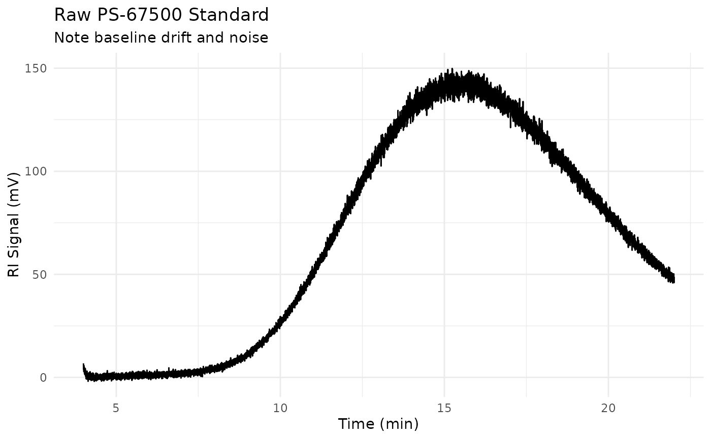

A dataset containing raw SEC chromatograms of polystyrene narrow standards with realistic noise, baseline drift, and injection artifacts. Designed to mimic data exported directly from SEC instruments for tutorial purposes.
Format
A tibble with approximately 130,000 rows and 6 columns:
- standard_name
Character. Standard identifier (e.g., "PS-67500")
- mp
Numeric. Peak molecular weight in Da from certificate
- log_mp
Numeric. log10(Mp) for calibration curve fitting
- dispersity
Numeric. Polydispersity index from certificate
- time_min
Numeric. Elution time in minutes
- ri_mv
Numeric. RI detector signal in millivolts (raw, unprocessed)
Details
This dataset represents "raw" data as it would come from an SEC instrument, before any processing. Key characteristics include:
Realistic Signal Features:
Gaussian noise on detector signal
Slow baseline drift from temperature fluctuations
Injection artifacts at start of run
Peak tailing typical of SEC columns
Standards Included: 12 polystyrene narrow standards spanning 580 Da to 930,000 Da, covering the typical analytical SEC range. Standards are based on commercial kit values.
Typical Tutorial Workflow:
Load raw data and inspect for quality
Apply baseline correction with
step_sec_baselineIdentify peak retention times
Build calibration curve with
step_sec_conventional_cal
See also
sec_raw_unknowns for unknown samples to analyze
sec_ps_standards for pre-processed calibration data
step_sec_conventional_cal for calibration step
Other sec-data:
sec_branched,
sec_calibration_standards,
sec_copolymer,
sec_pmma_standards,
sec_protein,
sec_ps_standards,
sec_raw_multidetector,
sec_raw_unknowns,
sec_system_suitability,
sec_triple_detect
Other sec-raw:
sec_raw_multidetector,
sec_raw_unknowns
Examples
data(sec_raw_standards)
# View available standards
unique(sec_raw_standards[, c("standard_name", "mp", "dispersity")])
#> # A tibble: 12 × 3
#> standard_name mp dispersity
#> <chr> <dbl> <dbl>
#> 1 PS-580 580 1.06
#> 2 PS-1270 1270 1.04
#> 3 PS-2960 2960 1.03
#> 4 PS-5970 5970 1.02
#> 5 PS-9680 9680 1.02
#> 6 PS-19600 19600 1.02
#> 7 PS-33500 33500 1.02
#> 8 PS-67500 67500 1.02
#> 9 PS-135000 135000 1.01
#> 10 PS-270000 270000 1.01
#> 11 PS-495000 495000 1.02
#> 12 PS-930000 930000 1.02
# Plot a single standard (shows noise and baseline)
if (requireNamespace("ggplot2", quietly = TRUE)) {
library(ggplot2)
library(dplyr)
sec_raw_standards |>
filter(standard_name == "PS-67500") |>
ggplot(aes(time_min, ri_mv)) +
geom_line() +
labs(
x = "Time (min)",
y = "RI Signal (mV)",
title = "Raw PS-67500 Standard",
subtitle = "Note baseline drift and noise"
) +
theme_minimal()
}
